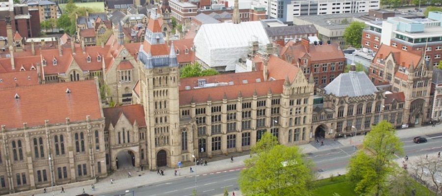
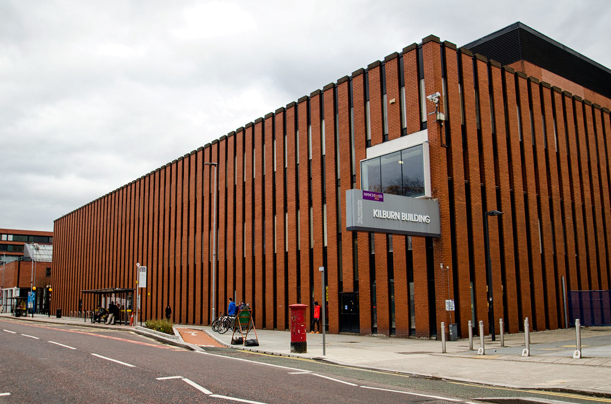
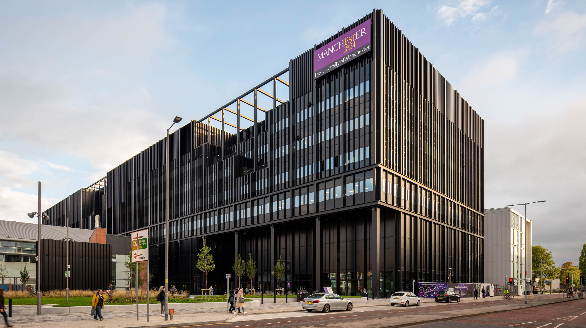

Home
About
Skills
Accommodation
Reviews
What the Foundation Year is
What the Computer Science with the Foundation Year is
This is a one-year programme where students will learn Mathematics and Physics courses to be able to have the fundamental knowledge required for their intended degree in the Department of Computer Science. The programme covers such teaching approaches as lectures, review sessions, and optional drop-ins that are done on the University of Manchester campus. It also includes video lessons that are meant to be watched during the student's free time. The Foundation Year also consists of additional courses such as ICT, Academic Skills, and a group project that will help develop the skills required for the degree.
The assessment in this programme contains online tests, in-person exams, and projects that are evaluated by the supervisors. The total percentages of each of the courses are then added on to four super units that consist of 3 specific courses. The total percentage of each course is summed on each of the super units and if reached the quota percentage required for all the super units, the student will be able to progress to the first year of their chosen degree.
Campus
The University of Manchester Campus consists of many buildings that are mainly centered towards Oxford Road and in the centre of the city,this allows students to be able to go on different buildings of the campus quite easily. The method of transport for students to arrive to the campus are also easily accesible with bus stops, train stations and some student accomodations being near the campus.

Whitworth Building

Kilburn Building - Department of Computer Science

Engineering Building A and B
The Staff of Computer Science Foundation Year
Dr. Jonathan Sly
Physics lecturer and Head of Foundation Studies
Simon Raw
Dr. Colin Steele
Academic skills lecturer
Maths lecturer